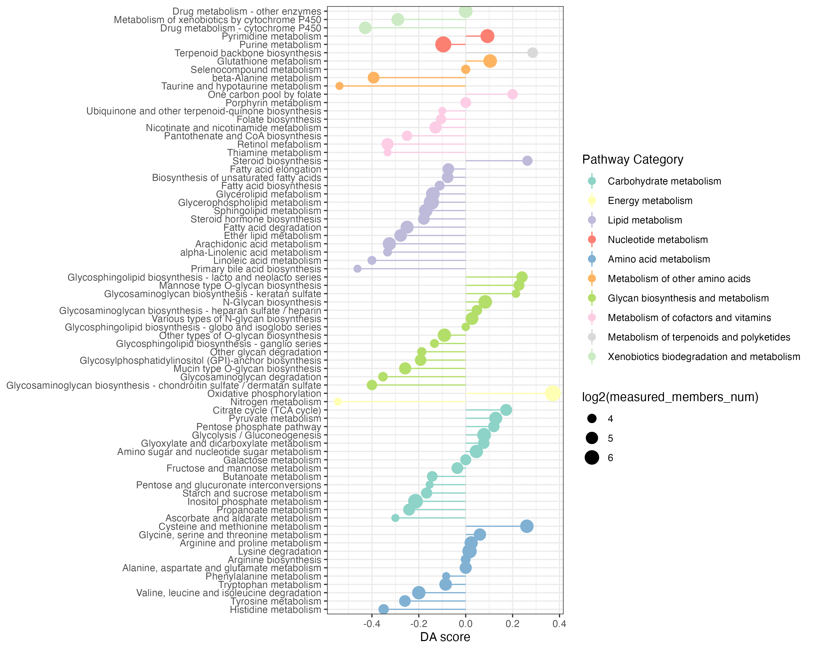

Chapter 2 Example-unique analyses
2.1 Loading the data
The case study is an integrated metabolic and transcriptional analysis to understand the rapidly proliferating breast cancers (Liao, et al., 2022). In this paper, the authors characterized the metabolomic profile of two types of 31 breast tumors in human to uncovered pyrimidine metabolism and glutaminolysis pathways are elevated in TNBC. As an example of mixed metabolites and genes analyses, here we are going to use both the dataset of metabolite and gene expression data as reported in the paper. The metabolomics data was accessed from the Supplementary Tables S2 in the paper, and the gene expression data is from the author. They found that pyrimidine and purine metabolism, carbon metabolism, and the energy production related pathways were highly enriched in Cluster 2 while many lipid/fatty acid metabolism related pathways were enriched in Cluster 1. We will use MNet to identify a set of features whose activity changes significantly between the two sample clusters.This result will hopefully hint at some specific biological activities that are pathologically altered in tumoral samples.
library(dplyr)
library(MNet)
library(stringr)
library(ggplot2)
library(RColorBrewer)
group[which(group=="normal")] <- "a"
group[which(group=="tumor")] <- "normal"
group[which(group=="a")] <- "tumor"
all_meta <- mlimma(meta_dat,group)
all_gene <- mlimma(gene_dat,group)
head(all_meta)## # A tibble: 6 × 8
## logFC AveExpr t P.Value adj.P.Val B logP name
## <dbl> <dbl> <dbl> <dbl> <dbl> <dbl> <dbl> <chr>
## 1 2.86 22.6 9.25 1.52e-10 0.0000000332 14.1 7.48 C02045
## 2 2.44 26.2 7.80 6.83e- 9 0.000000748 10.4 6.13 C00267
## 3 -1.82 27.1 -6.80 1.10e- 7 0.00000622 7.64 5.21 C00073
## 4 -3.78 20.9 -6.79 1.14e- 7 0.00000622 7.61 5.21 C05674
## 5 -2.20 21.4 -6.58 2.07e- 7 0.00000907 7.02 5.04 C00255
## 6 -2.37 21.6 -6.45 2.98e- 7 0.0000109 6.66 4.96 C00242head(all_gene)## # A tibble: 6 × 8
## logFC AveExpr t P.Value adj.P.Val B logP name
## <dbl> <dbl> <dbl> <dbl> <dbl> <dbl> <dbl> <chr>
## 1 6.92 23.1 11.3 1.15e-12 0.0000000203 17.7 7.69 APH1B
## 2 21.4 23.4 10.6 5.13e-12 0.0000000455 16.5 7.34 GFRA1
## 3 -5.76 24.4 -10.1 1.85e-11 0.0000000891 15.4 7.05 RFC4
## 4 10.5 14.8 10.1 2.01e-11 0.0000000891 15.3 7.05 FAM47E
## 5 -10.8 20.6 -9.79 3.85e-11 0.000000137 14.7 6.86 ORC6
## 6 4.02 5.65 9.69 4.98e-11 0.000000147 14.5 6.83 FAM87B2.2 Pathway enrichment analysis
2.2.1 gene pathway enrichment
KEGG metabolic pathway-based pathway enrichment (PE) analysis to investigate the dysregulation of metabolic pathways considering genes.
## gene
diff_gene_increase <- all_gene %>%
dplyr::filter(logFC > 0.58) %>%
dplyr::filter(adj.P.Val < 0.05)
result_gene_increase <- PathwayAnalysis(diff_gene_increase$name,out="gene",p_cutoff=0.05)
ggsave("result/gene_increase.png",result_gene_increase$p_barplot,width=10,height = 5)
write.table(result_gene_increase$output,"result/gene_increase.txt",quote=F,row.names = F,sep="\t")
diff_gene_decrease <- all_gene %>%
dplyr::filter(logFC < -0.58) %>%
dplyr::filter(adj.P.Val < 0.05)
result_gene_decrease <- PathwayAnalysis(diff_gene_decrease$name,out="gene",p_cutoff=0.05)
ggsave("result/gene_decrease.png",result_gene_decrease$p_barplot,width=10,height = 5)
write.table(result_gene_decrease$output,"result/gene_decrease.txt",quote=F,row.names = F,sep="\t")gene_increase and gene_decrease pathway enrichment


2.2.2 metabolite pathway enrichment
KEGG metabolic pathway-based pathway enrichment (PE) analysis to investigate the dysregulation of metabolic pathways considering metabolites.
## metabolite
## filter the increase differential genes and metabolites
diff_meta_increase <- all_meta %>%
dplyr::filter(logFC > 0.58) %>%
dplyr::filter(adj.P.Val < 0.05)
result_meta_increase <- PathwayAnalysis(diff_meta_increase$name,out="metabolite",p_cutoff=0.05)
ggsave("result/meta_increase.png",result_meta_increase$p_barplot,width=10,height = 5)
write.table(result_meta_increase$output,"result/meta_increase.txt",quote=F,row.names = F,sep="\t")
diff_meta_decrease <- all_meta %>%
dplyr::filter(logFC < -0.58) %>%
dplyr::filter(adj.P.Val < 0.05)
result_meta_decrease <- PathwayAnalysis(diff_meta_decrease$name,out="metabolite",p_cutoff=0.05)
ggsave("result/meta_decrease.png",result_meta_decrease$p_barplot,width=10,height = 5)
write.table(result_meta_decrease$output,"result/meta_decrease.txt",quote=F,row.names = F,sep="\t")metabolite_increase and metabolite_decrease pathway enrichment


2.2.3 Extended pathway enrichment
KEGG metabolic pathway-based extended pathway enrichment analysis (EPEA) to investigate the dysregulation of metabolic pathways considering both metabolites and genes using the function ‘PathwayAnalysis’.
## gene and metabolite
diff_increase <- rbind(diff_gene_increase,diff_meta_increase)
result_all_increase <- PathwayAnalysis(diff_increase$name,out="Extended",p_cutoff=0.05)
ggsave("result/all_increase.png",result_all_increase$p_barplot,width=10,height = 5)
write.table(result_all_increase$output,"result/all_increase.txt",quote=F,row.names = F,sep="\t")
diff_decrease <- rbind(diff_gene_decrease,diff_meta_decrease)
result_all_decrease <- PathwayAnalysis(diff_decrease$name,out="Extended",p_cutoff=0.05)
ggsave("result/all_decrease.png",result_all_decrease$p_barplot,width=10,height = 5)
write.table(result_all_decrease$output,"result/all_decrease.txt",quote=F,row.names = F,sep="\t")Extended pathway enrichment(increase and decrease)

2.2.4 Overview of pathway enrichment analysis
meta_increase <- data.table::fread("result/meta_increase.txt") %>%
as.data.frame() %>%
dplyr::select(name,pvalue) %>%
dplyr::mutate(type1 ="meta_Cluster1") %>%
dplyr::mutate(type2 ="metabolite")
meta_decrease <- data.table::fread("result/meta_decrease.txt") %>%
as.data.frame() %>%
dplyr::select(name,pvalue) %>%
dplyr::mutate(type1="meta_Cluster2") %>%
dplyr::mutate(type2 ="metabolite")
gene_increase <- data.table::fread("result/gene_increase.txt") %>%
as.data.frame() %>%
dplyr::select(name,pvalue) %>%
dplyr::mutate(type1 ="gene_Cluster1") %>%
dplyr::mutate(type2 ="gene")
gene_decrease <- data.table::fread("result/gene_decrease.txt") %>%
as.data.frame() %>%
dplyr::select(name,pvalue) %>%
dplyr::mutate(type1="gene_Cluster2") %>%
dplyr::mutate(type2 ="gene")
all_increase <- data.table::fread("result/all_increase.txt") %>%
as.data.frame() %>%
dplyr::select(name,pvalue) %>%
dplyr::mutate(type1 ="all_Cluster1") %>%
dplyr::mutate(type2 ="all")
all_decrease <- data.table::fread("result/all_decrease.txt") %>%
as.data.frame() %>%
dplyr::select(name,pvalue) %>%
dplyr::mutate(type1="all_Cluster2") %>%
dplyr::mutate(type2 ="all")
kegg_pathway_uniq <- PathwayExtendData %>%
dplyr::select(kegg_pathwayname,kegg_category) %>%
dplyr::rename("PATHWAY"="kegg_pathwayname") %>%
dplyr::rename("pathway_type"="kegg_category") %>%
unique()
result_meta <- rbind(meta_increase,meta_decrease) %>%
dplyr::filter(pvalue < 0.01)
result_gene <- rbind(gene_increase,gene_decrease) %>%
dplyr::filter(pvalue < 0.05)
result_all <- rbind(all_increase,all_decrease) %>%
dplyr::filter(pvalue < 0.05)
result <- rbind(result_meta,result_gene,result_all) %>%
dplyr::filter(!name %in% c("Sulfur metabolism","Fructose and mannose metabolism","Ascorbate and aldarate metabolism",
"Galactose metabolism","Butanoate metabolism","Pentose and glucuronate interconversions",
"Amino sugar and nucleotide sugar metabolism","Propanoate metabolism")) %>%
dplyr::left_join(kegg_pathway_uniq,by=c("name"="PATHWAY")) %>%
dplyr::filter(pathway_type != "Glycan biosynthesis and metabolism") %>%
dplyr::arrange(pvalue)
pathway_hh <- unique(result$pathway_type)
result <- result %>%
dplyr::filter(!pathway_type %in% c("Metabolism of terpenoids and polyketides","Metabolism of cofactors and vitamins","Biosynthesis of other secondary metabolites","Metabolism of other amino acids")) %>%
dplyr::arrange(match(pathway_type,pathway_hh))
result$name <- factor(result$name,levels = rev(unique(result$name)))
result$pathway_type <- factor(result$pathway_type,levels=unique(kegg_pathway_uniq$pathway_type))
result$type1 <- factor(result$type1,levels=c("meta_Cluster1","meta_Cluster2",
"gene_Cluster1","gene_Cluster2","all_Cluster1","all_Cluster2"))
p1 <- ggplot(result,aes(name,-log10(pvalue)))+
geom_bar(stat="identity",aes(fill=pathway_type))+
scale_fill_manual(values=RColorBrewer::brewer.pal(11, "Set3"),name="Pathway Category",
breaks=unique(kegg_pathway_uniq$pathway_type))+
scale_y_continuous(expand = c(0, 0))+
coord_flip()+
facet_grid(. ~ type1,scales="free_x")+
theme_bw()+
labs(x=NULL)
#p1
ggsave("result/epe-v0102.png",p1,width=15,height = 7)2.3 Pathway differential abundance score
2.3.1 gene differential abundance score
KEGG metabolic pathway-based differential abundance (DA) analysis investigate the dysregulation of metabolic pathways considering only genes.
diff_gene_increase <- all_gene %>%
dplyr::filter(logFC > 2) %>%
dplyr::filter(adj.P.Val < 0.01)
diff_gene_decrease <- all_gene %>%
dplyr::filter(logFC < -2) %>%
dplyr::filter(adj.P.Val < 0.01)
DAscore_gene <- DAscore(diff_gene_increase$name,diff_gene_decrease$name,all_gene$name,
min_measured_num = 10,out="gene",sort_plot="category")
ggsave("result/DA_gene.png",DAscore_gene$p,width=10,height = 8)
write.table(DAscore_gene$result,"result/DA_gene.txt",quote=F,row.names=F,sep="\t")
2.3.2 metabolite differential abundance score
KEGG metabolic pathway-based differential abundance (DA) analysis investigate the dysregulation of metabolic pathways considering only metabolites.
## metabolite
## filter the increase differential genes and metabolites
diff_meta_increase <- all_meta %>%
dplyr::filter(logFC > 2) %>%
dplyr::filter(P.Value < 0.01)
diff_meta_decrease <- all_meta %>%
dplyr::filter(logFC < 2) %>%
dplyr::filter(P.Value < 0.01)
DAscore_meta <- DAscore(diff_meta_increase$name,diff_meta_decrease$name,all_meta$name,
min_measured_num = 3,out="metabolite",sort_plot="category")
ggsave("result/DA_meta.png",DAscore_meta$p,width=10,height = 8)
write.table(DAscore_meta$result,"result/DA_meta.txt",quote=F,row.names=F,sep="\t")
2.3.3 Extended pathway differential abundance score
KEGG metabolic pathway-based extended differential abundance (EDA) analysis investigate the dysregulation of metabolic pathways considering both metabolites and genes.
## gene and metabolite
DAscore_all <- DAscore(c(diff_gene_increase$name,diff_meta_increase$name),
c(diff_gene_decrease$name,diff_meta_decrease$name),
c(all_gene$name,all_meta$name),min_measured_num = 13,
out="Extended",sort_plot="category")
ggsave("result/DA_all.png",DAscore_all$p,width=10,height = 10)
write.table(DAscore_all$result,"result/DA_all.txt",quote=F,row.names=F,sep="\t")2.3.4 Overview of pathway differential abundance score
meta <- data.table::fread("result/DA_meta.txt") %>%
as.data.frame() %>%
dplyr::filter(Measured_members_num >= 3) %>%
dplyr::mutate(Type="metabolite")
gene <- data.table::fread("result/DA_gene.txt") %>%
as.data.frame() %>%
dplyr::filter(Measured_members_num >= 10) %>%
dplyr::mutate(Type="gene")
all <- data.table::fread("result/DA_all.txt") %>%
as.data.frame() %>%
dplyr::filter(Measured_members_num >= 13) %>%
dplyr::mutate(Type="all")
result <- rbind(meta,gene,all) %>%
dplyr::filter(!Pathway %in% c("Sulfur metabolism","Fructose and mannose metabolism","Ascorbate and aldarate metabolism",
"Galactose metabolism","Butanoate metabolism","Pentose and glucuronate interconversions","Starch and sucrose metabolism",
"Amino sugar and nucleotide sugar metabolism","Propanoate metabolism","Inositol phosphate metabolism",
"Tryptophan metabolism",
"Selenocompound metabolism")) %>%
dplyr::filter(!`Pathway Category` %in% c("Metabolism of terpenoids and polyketides","Metabolism of cofactors and vitamins",
"Biosynthesis of other secondary metabolites","Xenobiotics biodegradation and metabolism",
"Glycan biosynthesis and metabolism","Metabolism of other amino acids"))
result_filter <- result %>%
dplyr::arrange(DA_score) %>%
dplyr::arrange(`Pathway Category`)
result_filter$Pathway <- factor(result_filter$Pathway,levels=unique(result_filter$Pathway))
kegg_pathway_uniq <- PathwayExtendData %>%
dplyr::select(kegg_pathwayname,kegg_category) %>%
dplyr::rename("PATHWAY"="kegg_pathwayname") %>%
dplyr::rename("pathway_type"="kegg_category") %>%
unique()
result_filter$Type <- factor(result_filter$Type,levels=c("metabolite",
"gene","all"))
p <- ggplot2::ggplot(result_filter)+
ggplot2::geom_point(ggplot2::aes(x=Pathway,y=DA_score,size=log2(Measured_members_num),color=`Pathway Category`))+
ggplot2::geom_pointrange(ggplot2::aes(x=Pathway,y=DA_score,ymin=0,ymax=DA_score,color=`Pathway Category`))+
scale_color_manual(values=RColorBrewer::brewer.pal(11, "Set3"),name="Pathway Category",
breaks=unique(kegg_pathway_uniq$pathway_type))+
ggplot2::coord_flip()+
# ggplot2::ylab("DA score")+
ggplot2::xlab(NULL)+
ggplot2::theme_bw()+
facet_grid(. ~ Type,scales="free_x")
ggsave("result/DA-v0102.png",p,width=18,height = 7)2.4 ESEA Metabolite Set Enrichment Analysis
the metabolite set enrichment analysis using function “ESEA”
all_result <- rbind(all_meta,all_gene)
all <- all_result$logFC
names(all) <- all_result$name
gene <- all_gene$logFC
names(gene) <- all_gene$name
meta <- all_meta$logFC
names(meta) <- all_meta$name
result_meta <- ESEA(meta,out="metabolite",minSize = 3)
result_gene <- ESEA(gene,out = "gene",minSize = 10)
result_all <- ESEA(all,out="Extended",minSize = 13)
kegg_pathway_uniq <- PathwayExtendData %>%
dplyr::select(kegg_pathwayname,kegg_category) %>%
dplyr::rename("PATHWAY"="kegg_pathwayname") %>%
dplyr::rename("pathway_type"="kegg_category") %>%
unique()
result_meta_filter <- result_meta %>%
dplyr::filter(pval < 0.5) %>%
dplyr::mutate(Type=ifelse(NES>0,"meta_Cluster1","meta_Cluster2"))
result_gene_filter <- result_gene %>%
dplyr::filter(pval < 0.2) %>%
dplyr::mutate(Type=ifelse(NES>0,"gene_Cluster1","gene_Cluster2"))
result_all_filter <- result_all %>%
dplyr::filter(pval < 0.2) %>%
dplyr::mutate(Type=ifelse(NES>0,"all_Cluster1","all_Cluster2"))
result <- rbind(result_meta_filter,result_gene_filter,result_all_filter)
result_filter <- result %>%
dplyr::left_join(kegg_pathway_uniq,by=c("pathway"="PATHWAY")) %>%
dplyr::filter(pathway_type != "Glycan biosynthesis and metabolism") %>%
dplyr::filter(!pathway_type %in% c("Metabolism of terpenoids and polyketides","Metabolism of cofactors and vitamins",
"Biosynthesis of other secondary metabolites","Xenobiotics biodegradation and metabolism","Metabolism of other amino acids")) %>%
dplyr::arrange(pval)
pathway_hh <- unique(result_filter$pathway_type)
result_filter <- result_filter %>%
dplyr::arrange(match(pathway_type,pathway_hh))
result_filter$pathway <- factor(result_filter$pathway,levels = rev(unique(result_filter$pathway)))
result_filter$pathway_type <- factor(result_filter$pathway_type,levels=unique(kegg_pathway_uniq$pathway_type))
result_filter$Type <- factor(result_filter$Type,levels=c("meta_Cluster1","meta_Cluster2",
"gene_Cluster1","gene_Cluster2","all_Cluster1","all_Cluster2"))
p <- ggplot(result_filter,aes(pathway,-log10(pval))) +
geom_bar(stat="identity",aes(fill=pathway_type))+
scale_fill_manual(values=RColorBrewer::brewer.pal(11, "Set3"),name="Pathway Category",
breaks=unique(kegg_pathway_uniq$pathway_type))+
scale_y_continuous(expand = c(0, 0))+
facet_grid(. ~ Type,scales="free_x")+
theme_bw()+
labs(x=NULL)+
coord_flip()
ggsave("result/ESEA_facet.png",p,width=15,height = 7)the msea plot of interested pathway
all_meta <- mlimma(meta_dat,group) %>%
dplyr::arrange(logFC)
all_gene <- mlimma(gene_dat,group) %>%
dplyr::arrange(logFC)
all_result <- rbind(all_meta,all_gene) %>%
dplyr::arrange(logFC)
all <- all_result$logFC
names(all) <- all_result$name
gene <- all_gene$logFC
names(gene) <- all_gene$name
meta <- all_meta$logFC
names(meta) <- all_meta$name
p1 <- pMSEA("Oxidative phosphorylation",gene,out="gene")
ggsave("result/plot_msea_oxipho_gene.png",p1,width=5,height = 5)
p2 <- pMSEA("Oxidative phosphorylation",meta,out="metabolite")
ggsave("result/plot_msea_oxipho_metabolite.png",p2,width=5,height = 5)
p3 <- pMSEA("Oxidative phosphorylation",all,out="Extended")
ggsave("result/plot_msea_oxipho_all.png",p3,width=5,height = 5)
p <- pMSEA("Fatty acid biosynthesis",meta,out="metabolite")
ggsave("result/plot_msea_Fatty acid biosynthesis_metabolite.png",p,width=5,height = 5)